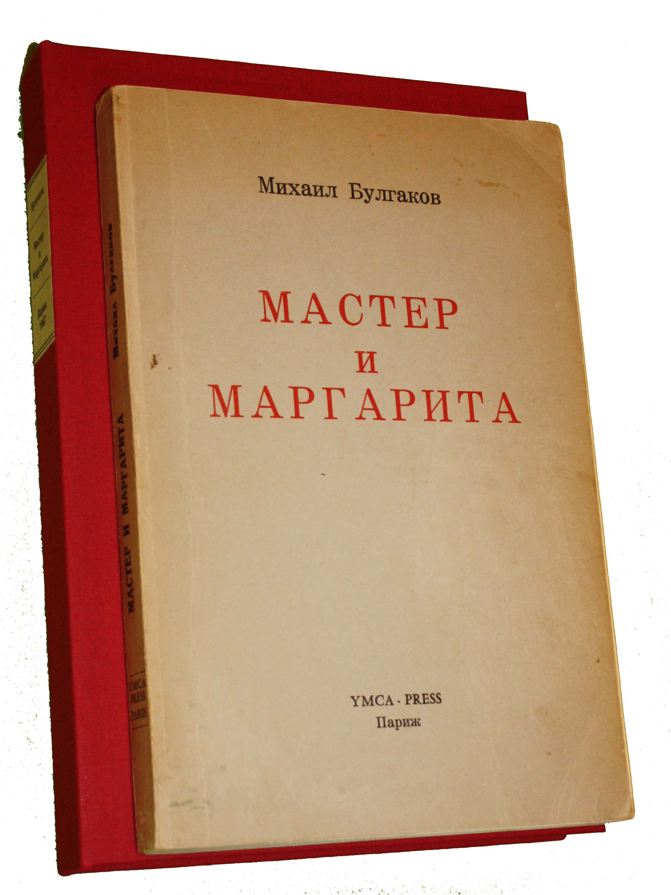

Михаил Булгаков, «Мастер и Маргарита»

«Мастер и Маргарита» — культовый роман Михаила Булгакова, ставший одним из главных произведений русской литературы XX века. Сюжет разворачивается в Москве 1930-х годов, куда прибывает таинственный Воланд со своей свитой, обнажая людские пороки, жадность и бюрократию столичного общества.
Параллельно в романе развивается философская линия о суде прокуратора Иудеи Понтия Пилата над Иешуа Га-Ноцри, написанная безымянным Мастером. Книга объединяет тонкую сатиру, мистику и историю преданной любви Маргариты, готовой преодолеть любые преграды ради любимого человека.